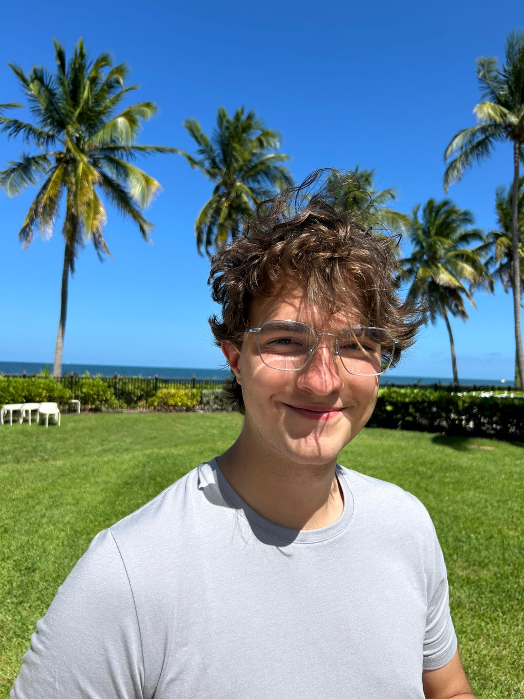

An end-to-end EEG brain–computer interface — a validated software pipeline and a custom-built acquisition device — told as the complete, honest story.
This project is an end-to-end brain–computer interface (BCI): a system that reads the brain's electrical activity and attempts to translate a mental command — imagining left-hand versus right-hand movement — into a signal a computer can act on.
The long-term vision is thought-based control of a robotic arm. The realistic first step is a binary output — like turning a light on or off — driven by two distinguishable mental states.
The project rests on two pillars. The software pillar is a full signal-processing and machine-learning pipeline, developed and validated on public research-grade EEG data before ever touching hardware. The hardware pillar is a custom-built EEG around a Raspberry Pi — an established microcomputer — turning an affordable, accessible platform into a working brain-signal acquisition device. Bringing the two together is where the real challenge lived.
A signal-processing and ML pipeline built and validated on research-grade EEG data — before any hardware was involved.
A custom EEG acquisition device built around a Raspberry Pi, from board bring-up to a hand-built electrode cap.
What follows is the complete, honest account of that process — the methods, the results, and just as importantly, what didn't work and what I learned from it.

Ian Beeck
Electrical Engineering · University of Michigan
I'm a sophomore studying Electrical Engineering at the University of Michigan. Originally from Mexico and having lived all over, I've long been drawn to medicine — and specifically to biomedical devices. That interest led me to the Saab Lab, an electrophysiology lab studying nociception, where I first encountered the EEG. Something about measuring the brain's electrical activity fascinated me, and looking back, that early intrigue with electrophysiological signals is what set me on the path I'm on now: a genuine enthusiasm for signal processing and a desire to understand signals at a deeper level — whether that's neural activity, wireless networks, or anything in between.
This project came out of the inner engineer in me that wanted to build something real with a Raspberry Pi. Brainstorming what that "something" could be, I landed on an idea that felt like a full-circle moment: use this established little computer to build an EEG — bringing together the electrophysiology that first drew me in and the signal processing I'd come to love.
Once I started researching and realized it was actually feasible, I set concrete goals. First, I wanted to learn to integrate software and hardware — a skill I'd started developing in a robotics course this past semester and wanted to push further. Second, I wanted to go deeper into signal processing techniques and the mathematics behind experimentally working with EEG. Those goals shaped the target: build an EEG-based system that could distinguish imagined right-hand from left-hand movement — a two-class brain–computer interface, with a possible future application in controlling a device through thought alone.
This project has a long list of next steps — more electrodes, an eyes-open/closed binary switch, real-movement trials. If you have thoughts, critiques, or ideas for where it could go, leave them below.